Levels of Abstraction
KhepriBase models buildings at three increasingly abstract levels. Each is independently usable: you can stop at any one level, or compose between them. The analogy to bear in mind is Julia's own Vector — you can build one with push! inside a loop, or describe it with a comprehension. Both are valid. Both produce the same type.

Level 2 (declarative) ── a Design: immutable tree, combinators ─┐
│ │
│ compile(design) → Layout │
▼ │ Everyone lands at
Level 1 (imperative) ── a Layout: Storeys of named Spaces ──────┤ a Layout, then
│ │ build it
│ build(layout) → … │
▼ │
Level 0 (primitives) ── wall(), slab(), add_door(), column() ──┘Level 0 — BIM primitives
The foundation: portable, imperative BIM calls. Each primitive takes the current Khepri backend's active CAD tool and emits geometry there — wall(path, bottom_level, top_level, family), slab(region, level, family), add_door(wall, loc, family), column(...), beam(...), plus the families, paths, levels, and material constants that feed them.
This level is where autocad() / rhino() / revit() / blender() connect calls change the destination of every BIM call.
Shape. Imperative, element-at-a-time. No aggregation, no notion of "space" — just "place this wall here".
Useful when. You know exactly what to build, you've computed the coordinates elsewhere, or you need a CAD operation that the higher levels don't model (sculptural geometry, reference lines, annotation symbols).
Level 1 — Layout (Space-first)
The intermediate layer: a building is a stack of Storeys; each storey holds a list of Spaces (closed-path boundaries with a kind tag) and SpaceConnections (doors, windows, arches). A Layout bundles all storeys with the validation Constraints that apply across them.
build(layout) walks every storey, classifies shared-vs-exterior edges, merges collinear segments through the WallGraph, places doors and windows on the resulting walls, and optionally generates floor slabs. The result is a BuildResult per storey, carrying the SpaceBoundary records that map elements back to spaces — the same semantic structure IFC uses for IfcRelSpaceBoundary.
plan = floor_plan(height=2.8, wall_family=wall_family(thickness=0.2))
living = add_space(plan, "Living", rectangular_path(u0(), 5, 4); kind=:living_room)
kitchen = add_space(plan, "Kitchen", rectangular_path(xy(5, 0), 3, 4); kind=:kitchen)
add_door(plan, living, kitchen)
add_rule(plan, KhepriBase.min_area(:kitchen, 6.0))
results = build(plan) # -> Vector{BuildResult}
vr = validate(plan) # -> ValidationResultFor multi-storey construction, layout() opens an empty Layout and add_storey! stacks storeys on top of each other with z-coordinates derived from the cumulative heights.
Shape. Mutable, explicit, direct. Each space's boundary is given verbatim. Good for hand-authored plans, programmatic Layout generators, and as the compilation target of Level 2.
Useful when. You want to pin down exactly where each space lives in plan, validate the result against a constraint set, and keep the structure modifiable — all while retaining the space-to-element traceability that downstream BIM tools depend on.
Level 2 — Design (declarative, coming from AlgorithmicArchitecture)
The highest level: a Design is an immutable tree of rooms, combinators (|, /, ^, beside, above, grid, repeat_unit, …), top-down operators (subdivide_x, partition_x, carve, refine, subdivide_remaining), and transforms (scale, mirror, with_height, with_props). compile(design) runs a layout algorithm that walks the tree, assigns world coordinates, and emits a Level-1 Layout.
Today this layer lives in AlgorithmicArchitecture.jl. Over time its generic spatial-DSL core (the tree types, combinators, layout engine) is being folded into KhepriBase so that anyone using KhepriBase can opt into declarative description without also adopting AA's architectural opinions (typologies, building codes, code-compliance constraints).
# (AA syntax today; reachable from KhepriBase once the extraction completes)
design = envelope(40.0, 20.0, 3.0) |>
e -> carve(e, :garden, :garden; x=10, y=5, width=20, depth=10) |>
subdivide_remaining([(:n, :north), (:s, :south), (:e, :east), (:w, :west)])
lr = layout(design) # AA today → LayoutResult
_, l = to_layout(lr) # → KhepriBase.Layout (Level 1)
result = build(l) # → BIM elements (Level 0)Shape. Immutable, composable, pattern-rich. Describe a 200-room hospital in 30 lines. Testable without running any CAD.
Useful when. Parametric or pattern-driven design, when the geometry falls out of the composition rather than being specified; when you want to test alternatives cheaply; when you want the algorithm that produces the building, not just the building.
Choosing a level
Ascending the levels trades concreteness for expressiveness:
| Level 0 | Level 1 | Level 2 | |
|---|---|---|---|
| Mutability | side-effecting | mutable Layout | immutable Design |
| Paradigm | imperative | imperative | functional |
| Unit of work | one element | one space | one pattern |
| Storeys | flat | multi-storey | multi-storey |
| Pattern composition | no | no | yes (grid, repeat, subdivide) |
| Validation story | none | Constraints on Layout | constraints + fixer loop on Design |
| Output traceability | none | SpaceBoundary records | → Layout → SpaceBoundary |
Levels are composable both directions: a Level 2 Design compiles to a Level 1 Layout, and a Level 1 Layout builds to Level 0 elements. You can also enter at Level 1 directly (hand-author a Layout) and skip Level 2 entirely. Or enter at Level 0, bypassing the space model, when you just want a few walls.
The principle borrowed from Vector comprehensions: having more than one way to produce the same thing is a feature, not a duplication, because the different ways suit different inputs — data you have (build it imperatively) versus data you compute (describe it functionally).